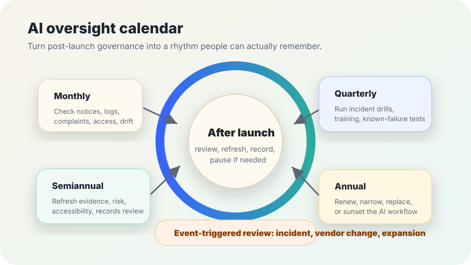

AI governance after launch
AI oversight calendar.
A practical schedule for recurring AI reviews, notice checks, records cleanup, incident drills, training refreshes, vendor checks, and renewal decisions so oversight does not depend on memory.
The short answer
An AI oversight calendar turns “we should keep an eye on it” into dated work: monthly checks, quarterly drills, semiannual evidence refreshes, annual renewal or sunset decisions, and immediate review after major changes or incidents.
The calendar should be proportionate. A low-risk internal drafting aid may need a short monthly log check and an annual owner review. A public-facing or high-impact workflow needs tighter monitoring, clearer pause authority, stronger documentation, and more frequent evidence review.

Why a calendar matters
NIST’s AI Risk Management Framework presents AI risk management as ongoing work across governance, mapping, measurement, and management. OMB Memorandum M-24-10 similarly emphasizes governance, testing, monitoring, risk management, and public inventories for federal agency AI uses. NIST SP 800-53 treats monitoring, configuration management, access control, audit, contingency, and incident response as recurring control families, not one-time launch tasks.
For civic teams, the practical lesson is simple: the AI workflow people are using in month nine may not be the same risk that was approved in month one. Vendors update models and policies, staff create workarounds, access lists drift, notices go stale, local data changes, and new failure patterns appear. A calendar makes those changes visible.
Use a cadence people can actually keep
| When | What to check | Minimum evidence to keep |
|---|---|---|
| Monthly | Open incidents, appeals, complaints, help-desk themes, access lists, public notices, vendor alerts, deletion requests, and whether monitoring signals are being checked. | Short status note, unresolved issue list, owner initials or role, and any pause or escalation decision. |
| Quarterly | Known failure examples, incident drill, staff refresher, accessibility and language-access feedback, high-risk prompts or templates, and whether stop rules still work in practice. | Drill notes, updated test cases, training log update, and changes sent to owners. |
| Every 6 months | Risk register, local evaluation evidence, bias and quality checks, records retention, data minimization, audit trail completeness, vendor settings, and affected-population changes. | Evidence refresh summary, risk-rating changes, records decision notes, and public-notice updates. |
| Annually | Whether to renew, narrow, pause, replace, or sunset the workflow; whether benefits claims are still supported; whether safeguards cost more than the value delivered. | Renewal decision, sunset or continuation rationale, budget or contract implications, and next review date. |
| Immediately after triggers | Incidents, vendor model changes, new data sources, new integrations, workflow expansion, public launch, policy changes, or changed rights/safety impact. | Change-control entry, retest results, approval or pause decision, communication record, and rollback path. |
Monthly check: keep the basics from drifting
Incidents and appeals
Review unresolved complaints, corrections, escalations, appeal outcomes, and near misses. Look for repeat failure patterns, not just dramatic incidents.
Notices and scripts
Check whether public notices, staff scripts, consent language, and help pages still describe the actual workflow, data use, human review, and appeal path.
Access and logs
Confirm that access still matches roles. Check whether audit logs, deletion evidence, and retention actions are being captured as planned.
Vendor changes
Review vendor release notes or notices for model, policy, subprocessor, data-use, security, or feature changes that require change control.
Quarterly check: rehearse and retest
- Run a short incident drill: who can pause the tool, who notifies affected people, who preserves records, and who approves restart?
- Retest known failure examples, edge cases, accessibility issues, language-access issues, and cases where the AI previously overreached or gave misleading confidence.
- Refresh staff training on allowed uses, prohibited uses, privacy rules, security rules, human review, and stop rules.
- Check whether people have created shadow workflows outside the approved process because the official one is confusing, slow, or poorly supported.
- Update the risk register if monitoring shows new harms, reduced benefit, higher workload, or wider use than expected.
Every six months: refresh the evidence
- Compare current benefits claims with measured results. Do not keep repeating claims that are no longer supported by local evidence.
- Review privacy, data minimization, retention, deletion, audit trail, and records schedules against actual use.
- Check accessibility, language access, bias, security, and human-review safeguards with current examples, not only launch assumptions.
- Confirm the owner, backup owner, vendor contact path, pause authority, and escalation route are still accurate.
- Decide whether any risk has grown enough to require public notice updates, governance review, narrowing, or a temporary pause.
Annual decision: continue, narrow, replace, or sunset
At least once a year, turn oversight into a decision. Do not let an AI workflow continue only because it is already there.
- Continue when evidence, safeguards, ownership, notices, and monitoring remain adequate for the current use.
- Narrow when the tool is useful in some contexts but too risky, inaccurate, burdensome, or poorly supported in others.
- Replace or renegotiate when the vendor, workflow, contract, or support model no longer fits public needs.
- Sunset when harms, unresolved incidents, stale evidence, low value, records problems, or loss of trust outweigh the benefit.
Copy-paste oversight calendar
Keep public copies free of secrets, personal data, private logs, credentials, vendor-confidential details, and sensitive case facts. Link to restricted evidence repositories when needed.
Stop rules
- Do not continue an AI workflow when no current owner can pause it, explain it, or answer affected people’s questions.
- Do not ignore incidents, appeals, access drift, or vendor model changes until the annual review. Trigger review immediately.
- Pause expansion when public notices, staff scripts, risk registers, or evidence are stale.
- Pause use in higher-impact settings when local testing, accessibility review, language-access review, or human-review safeguards have not been refreshed.
- Do keep the calendar small enough to use. A neglected 40-step review is weaker than a five-step review that happens on time.
Related field-guide pages
Sources
- NIST — AI Risk Management Framework.
- NIST — AI RMF development and supporting resources.
- NIST — Security and Privacy Controls for Information Systems and Organizations, SP 800-53 Rev. 5, used here for general recurring-control concepts such as monitoring, access control, audit, incident response, contingency, and configuration management.
- Office of Management and Budget — Memorandum M-24-10, Advancing Governance, Innovation, and Risk Management for Agency Use of Artificial Intelligence.
- CISA — Secure by Design, used here for the operational habit of designing systems with ongoing safety and accountability rather than treating safeguards as optional add-ons.
This guide is public education, not legal, security, procurement, or compliance advice. Local rules may require stronger approvals, documentation, public notice, accessibility review, retention schedules, or records handling.